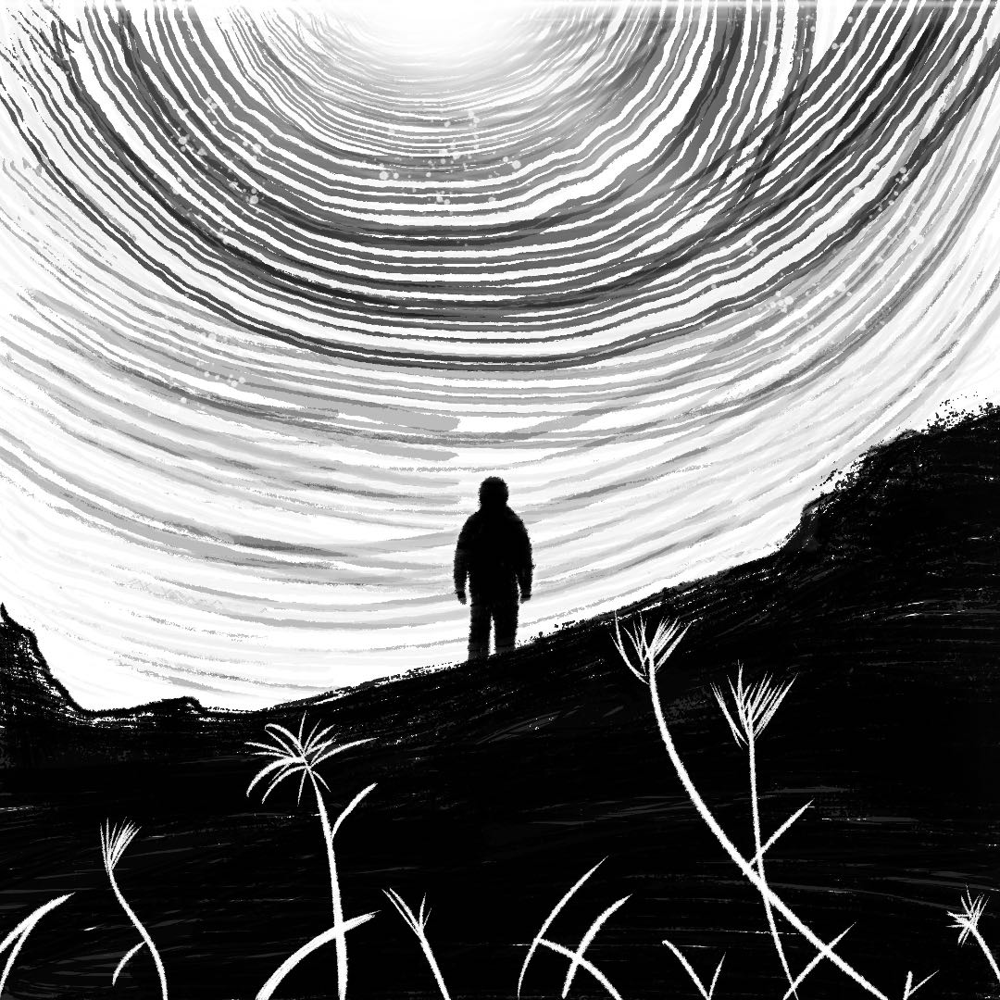
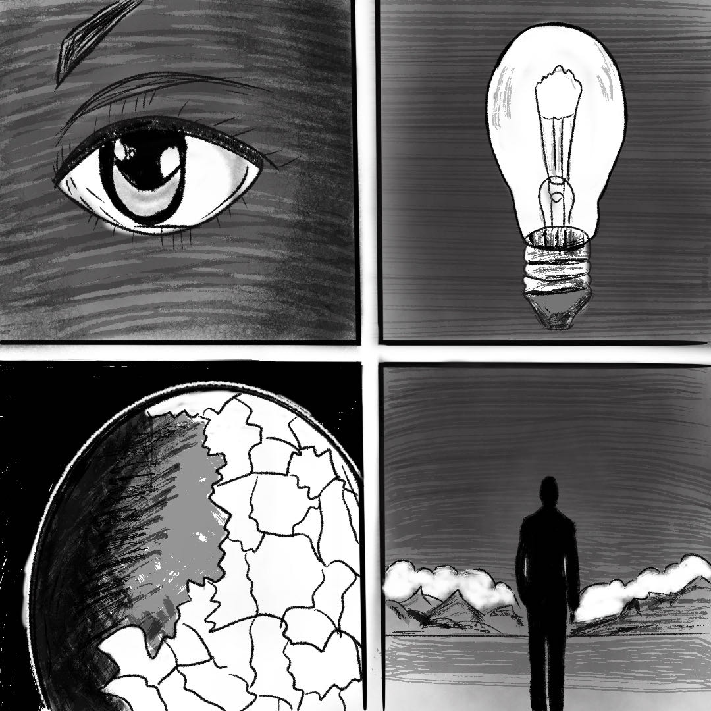
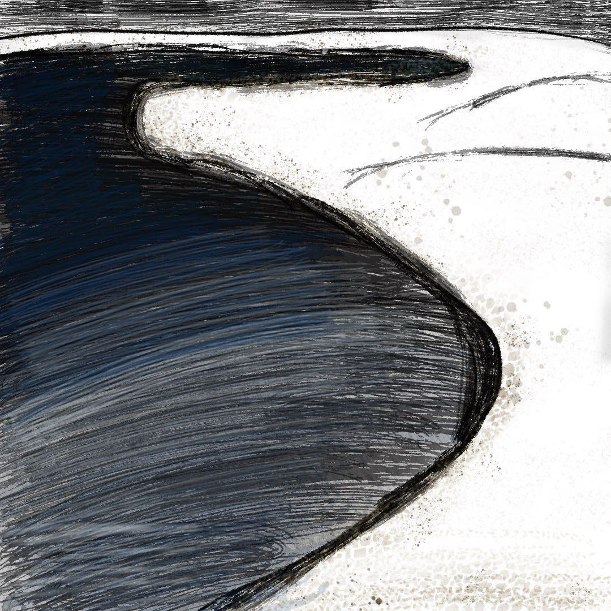
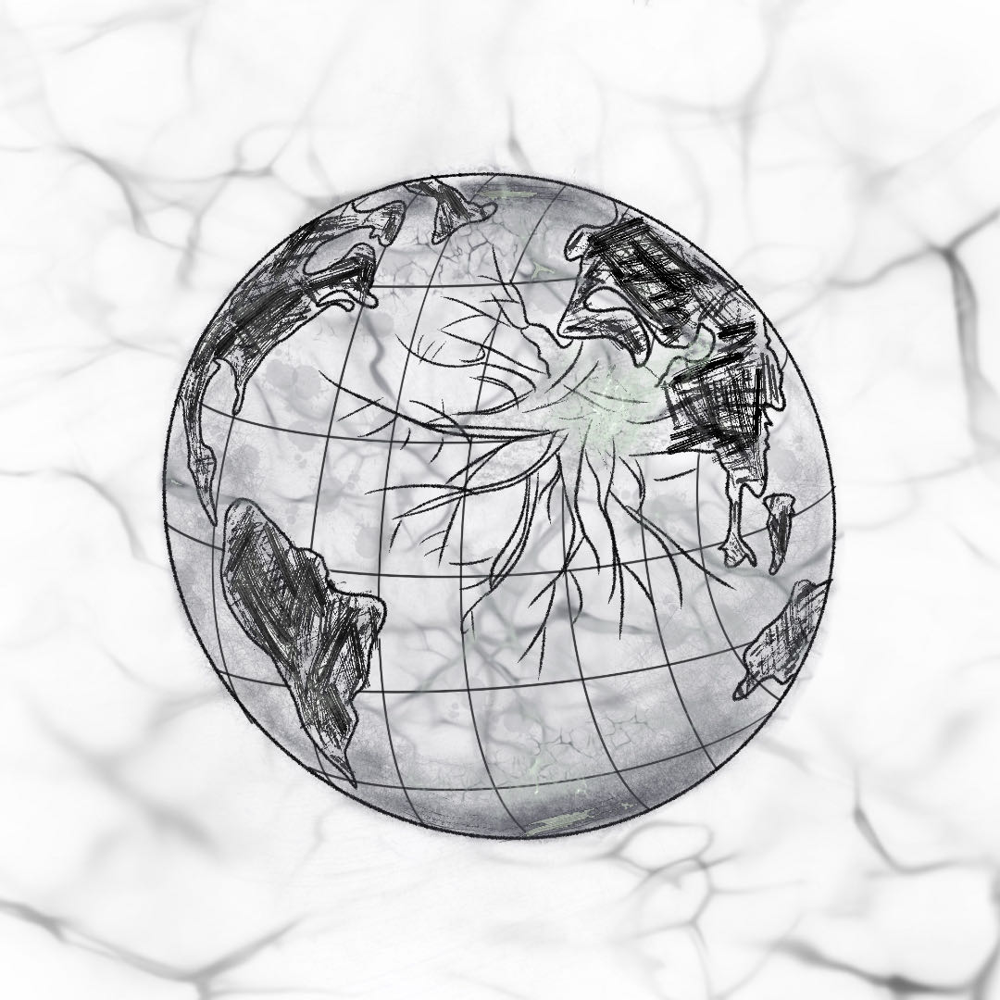
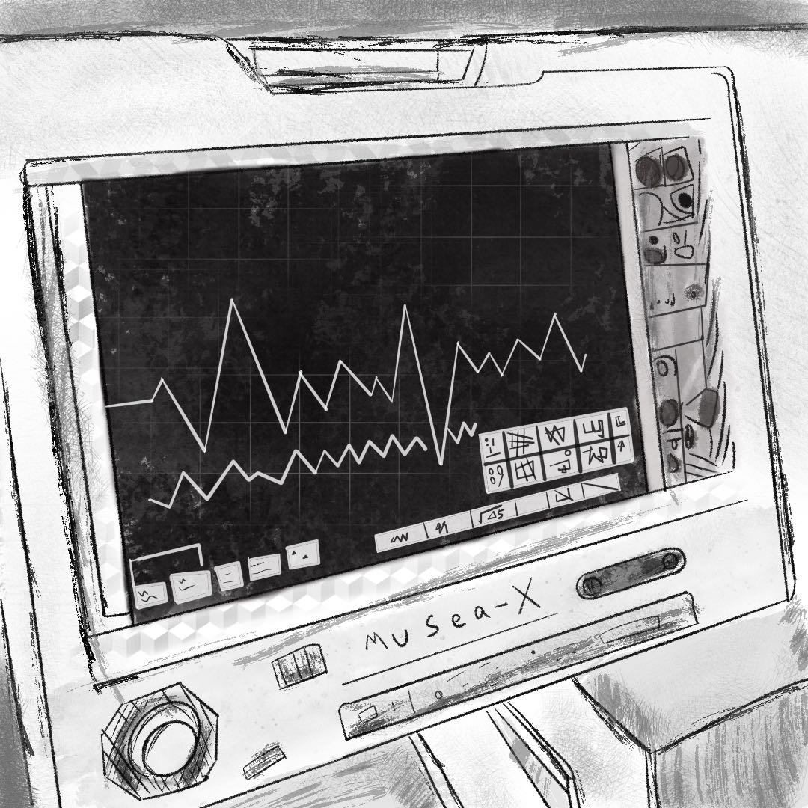

UCL 数字媒体硕士 · 重庆大学 广播电视学士 · 坐标北京
张家萁 · 2002.03
重庆大学广播电视专业本科，伦敦大学学院（UCL）数字媒体-制作硕士。具备新闻采编、影像叙事与数字媒体制作基础，希望将专业实践带入校园，支持学校新媒体宣传、媒体中心建设与校园电视台内容制作。
作为北京亦庄实验中学首届毕业生，我对母校有亲历的校园记忆和深厚感情，也珍视学生视角中的校园生活。希望回到熟悉的校园，认真倾听学生的想法，将他们的日常、兴趣与成长转化为有温度的校园故事，让学生成为记录者和表达者。
曾在网易、罗德传播集团、中国搜索、人民网等机构实习，积累了沟通协调、选题策划、内容审核与项目执行经验。熟悉 PR、剪映、PS 等工具；拟以“示范—分组实践—作品反馈”的方式，将采写、拍摄与剪辑拆解为学生易理解、可操作的任务，支持社团实践与媒介素养培养。
传媒专业基础 · 沟通协作实践 · 校园媒体岗位适配
从真实作品出发，呈现校园传播与学生创作指导的应用思路
参与中国搜索与新华社联合策划的主题视频项目，完成创意方案与 1.2 万字背景资料调研，协同推进内容制作。校园应用：将资料检索、信息核实与主题表达的方法用于校园专题报道；指导学生时，可从“确定主题—核实材料—编写脚本”入手，培养严谨采编和清晰表达的习惯。
围绕商业广告完成需求理解、创意构思、脚本撰写、拍摄、后期与交付，展示完整的视频制作流程。校园应用：将流程迁移至校园活动宣传片与栏目短视频；拟通过分镜示范和角色分工，引导学生协作完成策划、拍摄及剪辑，让每个环节都有明确任务和反馈。

🎓 毕业设计



UCL 团队课程项目，围绕叙事机制、情感选择与视觉方案完成游戏设计文档。创作过程需要倾听不同想法、讨论人物动机并形成共同方案。校园应用：可作为社团小组创作的讨论素材，鼓励学生表达观点、尊重差异，通过分工与作品分享练习沟通协作。
媒体制作技能 · 校园传播应用 · 学生指导思路
期待回到母校，与学生一起记录校园、表达成长